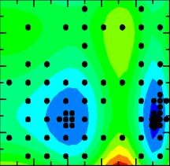

About the Software
VTDIRECT95 is a Fortran 95 implementation of D. R. Jones' deterministic global optimization algorithm called DIRECT (Jones et al. [1993], which is widely used in many multidisciplinary design optimization problems such as high speed civil transport aircraft design (Baker et al. [2000]), pipeline design ( Carter et al. [2001]), aircraft routing (Bartholomew-Biggs et al. [2003]), surface optimization (Zhu et al. [2002]), wireless communication transmitter placement (He et al. [2004]), molecular genetic mapping (Ljungberg et al. [2004]), and cell cycle modeling (Zwolak et al. [2005] and Panning et al. [2008]). The package includes both a serial code and a data-distributed massively parallel code for different problem scales and optimization (exploration vs. exploitation) goals. Dynamic data structures are used to organize local data, handle unpredictable memory requirements, reduce the memory usage, and share the data across multiple processors. The parallel code employs a multilevel functional and data parallelism to boost concurrency and mitigate the data dependency, thus improving the load balancing and scalability. In addition, checkpointing features are integrated into both versions to provide fault tolerance and hot restarts. Using several benchmark functions and real-world applications, the software is evaluated on different systems in terms of optimization effectiveness, data structure efficiency, parallel performance, and checkpointing overhead.
References
[1] Baker, C.A., Watson, L.T., Grossman, B., Haftka, R.T., and Mason, W.H. 2000. Parallel global aircraft configuration design space exploration. High Performance Computing Symposium 2000, A. Tentner (Ed.), Soc. for Computer Simulation Internat, San Diego, CA, pages 101-106.
[2] Bartholomew-Biggs, M.C., Parkhurst, S.C., and Wilson, S.P. 2003. Global optimization approaches to an aircraft routing problem. EUR J. Operational Research 146, pages 417-431.
[3] Carter, R.G., Gablonsky, J.M., Patrick, A., Kelly, C.T., and Eslinger, O.J. 2001. Algorithms for noisy problems in gas transmission pipeline optimization. Optimization and engineering 2, pages 139-157.
[4] He, J., Verstak, A., Watson, L.T., Stinson, C.A., Ramakrishnan, N., Shaffer, C.A., Rappaport, T.S., Anderson, C.R., Bae, K., Jiang, J., and Tranter, W.H. 2004. Globally optimal transmitter placement for indoor wireless communication systems. IEEE Transactions on Wireless Communications 3, pages 1906-1911.
[5] Jones, D.R., Pertunen, C.D., and Stuckman, B.E. 1993. Lipschitzian optimization without the Lipschitz constant. J. Optimization Theory and Applications 79, pages 157-181.
[6] Ljungberg, K., Holmgren, S., and Carlborg, Ö. 2004. Simultaneous search for multiple QTL using the global optimization algorithm DIRECT. Bioinformatics (Oxford, England) 20, pages 1887-1895.
[7] Panning, T.D., Watson, L.T., Allen, N.A., Chen, K.C., Shaffer, C.A., and Tyson, J.J. 2008. Deterministic parallel global parameter estimation for a model of the budding yeast cell cycle. J. of Global Optimization 4, pages 719-738.
[8] Zhu, H. and Bogy, D.B. 2002. DIRECT algorithm and its application to slider airbearing surface optimization. IEEE Transactions on Magnetics 38, pages 2168-2170.
[9] Zwolak, J.W., Tyson, J.J., and Watson, L.T. 2005. Globally optimised parameters for a model of mitotic control in frog egg extracts. IEE Systems Biology 152, pages 81-92.